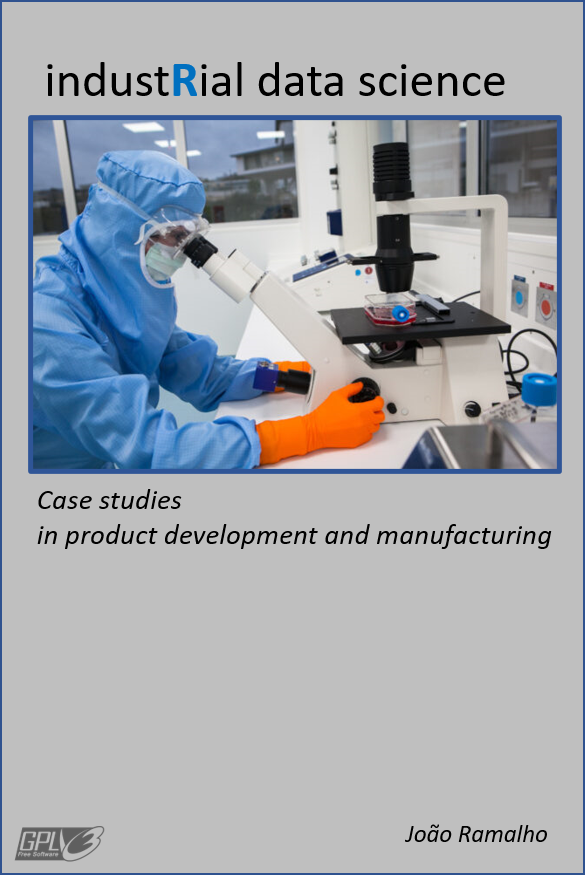

industRial data science
Produce locally, use renewable energies, reduce food waste, increase packaging recyclability, avoid polution, protect biodiversity. These are only a few of our many current challenges. But improving Products and Production Processes requires skilled data analysis and a strong understanding of manufacturing processes.
My book industRial Data Science adressed to Scientists, Engineers and Technicians in the Manufacturing Industry, has a collection of case studies adapted from real life projects. It provides step by step descriptions of how to pragmatically improve product quality, reduce waste and optimize operational costs. In also provides instructions on how to download and use original open source software tools to handle most of the examples.